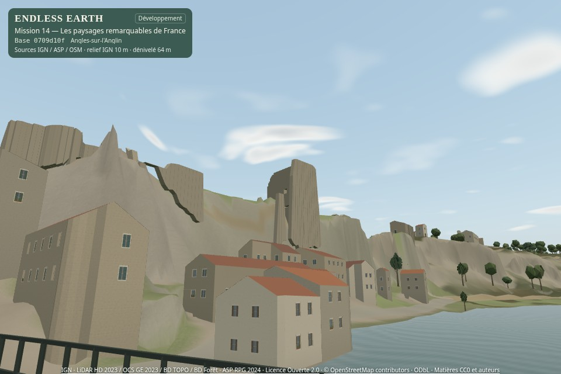
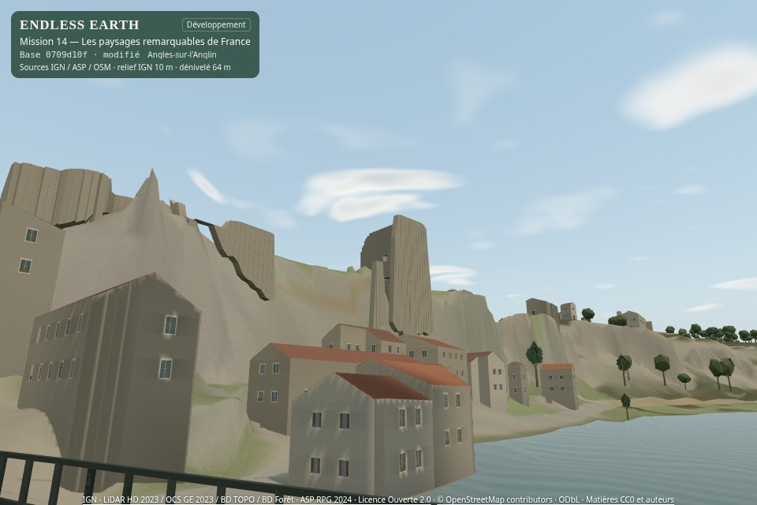

14C · en attente de validationLumière sur les formes
Contacts discrets, ombres proches et sous-bois moins uniformes, avec le même soleil, la même météo et les mêmes matériaux. Les données géographiques et les collisions de 14B sont conservées.
Rapport complet · Planche de comparaison · Archive 14B
18 vues appariées204 tests réussis0 € · aucune publication
Matin, après-midi, soir
Vrai moteur, mêmes poses et matrices, 960 × 640, FOV 55°, Équilibré, 21 juin 2026 clair. Avant : checkout propre 0709d10. Après : travail 14C sur cette base, badge « modifié ». Aucune retouche des captures.


Avant · 14BAprès · 14CLa référence « contact seul » est disponible l’après-midi pour le château, le sous-bois et la vallée.
Les 36 captures originales
Poses avant · Poses après · Sources et physique préservées
Une traversée et une observation en forêt
Traversée manuelle native de l’axe réel du pont, profil Équilibré. Une pose initiale, puis commandes de marche et orientation seulement. Aucun changement de vitesse, temps ou position pendant l’enregistrement. Son natif.
Inspection immobile distincte de 22 s dans le sous-bois existant : couronnes, vent et mises à jour des ombres. Aucun chemin de liaison inventé.
Traversée instrumentée · Inspection forestière · Encodage et audio conservés
Un compromis mesuré
Surcoût médian en Équilibré : -2.3 à +6.5 % sous SwiftShader logiciel, dans les trois vues mesurées. Les pics et les rafraîchissements sont également conservés. Ces mesures ne prouvent pas une fluidité GPU physique ou Android.
| Profil | Contact | Ombres solaires locales |
|---|
| Éco | Précalculé | Carte désactivée |
| Équilibré | Précalculé | 512² · rayon 48 m · jusqu’à 2 Hz |
| Qualité | Précalculé | 1024² · rayon 64 m · jusqu’à 4 Hz |
La carte ne couvre que le voisinage du joueur. Elle s’atténue de 140 à 180 m de distance caméra/joueur et aux bords du champ. Le ciel, la brume, la nuit, la météo et le vent restent ceux de Mission 11 ; aucun brouillard permanent, bloom ou nouvel éclairage intérieur.
Les silhouettes grossières des couronnes donnent des ombres approximatives ; elles ne reproduisent pas chaque feuille. Les contacts sont interpolés sur les sommets existants, parfois espacés de 10 m. Des gains restent faibles depuis la vallée, et des fuites de lumière ou artefacts locaux peuvent subsister près des détails étroits et des limites de carte. Les références et licences géographiques de 14A/14B s’appliquent toujours.
Préparation · Coûts finaux · Candidat initial plus large · Profils et replis · Déterminisme · Droits et interprétations
14B validé par « go ». Arrêt à 14C pour validation artistique ; 14D non commencé. Aucun merge ni déploiement.